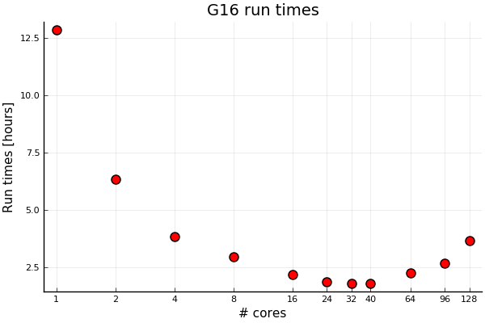

Gaussian performance tuning using single node shared memory
###The Linda version is not covered on this page. The local Linda installation contain some local adaptations, like wrapper script etc not present in the threaded shared memory version. A tuning guide for the Linda versions is in preparation.
Introduction
Gaussian is a widely used and well known application. The current (pt. 2021) implementation is Gaussian 16. This version can utilise several cores using an OpenMP threading model and hence confined to a single machine using shared memory.
This guide is dealing with the shared memory version running on single node. Gaussian is compiled using the PGI (now NVIDIA) compiler using OpenMP. For those of you who know OpenMP well, be aware that the PGI compiler only support a limited set of OpenMP environment flags.
The Gaussian manual describe several options which is important for the performance. The keywords most associated with parallel execution is
%NPROCSHARED=xx%MEM=yyyyMB
%NPROCSHAREDset how many OpenMP threads Gaussian can launch, as the name suggest it’s shared memory (which implies a single node).%MEMset how much memory (often called core) Gaussian can use in total, this include memory for 2-electron integrals which might be calculated in-core if possible.
There are also environment variables that handle OpenMP and PGI compiler settings.
OMP_PROC_BINDcan be tried to improve performance (have been reported to fail with some SLURM jobs, use with caution).PGI_FASTMATH_CPUshould be set to the architecture used, see later. Some performance improvement.
Recomputing 2-electron integrals, direct SCF is now default as it’s faster to compute these than reading them from disk. In addition doing the calculation in memory (in-core) is also default (if possible). This can have a major impact of performance. See later about memory allocation.
Please consult the Gaussian manual about specific settings.
Scaling
Single node shared memory OpenMP is known to have limited scaling in most usage scenarios. With the current processors it’s common to have far more cores available in each compute node than what Gaussian can effectively utilise. The figure below show examples of scaling, not all applications scale linearly. Some even run slower with a high core count.
Hence, care must be taken not to waste cores by requesting too many. A scaling study should be undertaken and the optimal core count for the input in question should be established. As Gaussian has a huge number of different modes and methods clear guidelines cannot be given, only that Gaussian (using OpenMP) does not scale to high core counts.
It’s important to set the same number of cores in both the SLURM file and the
Gaussian input file, or at least as many as specified in the Gaussian input.
The Linda version have a wrapper for this, but that is an exception. Please verify
that the number of cores in slurm --tasks-per-node and %NPROCSHARED are the same.
Gaussian will launch NPROCSHARED threads, if less allocated cores
some threads will share cores with severe performance implications.
Quite common findings is that a relatively small number of cores are optimal as the scaling is not very good for any higher number of cores. These extra cores are essential wasted and could be used by other jobs.
Below is an example of a real Gaussian run:

There is a significant speedup with core count from one core and up to a core count of about 32. Using more than 40 cores seems counterproductive for shared-memory parallelization. With Linda parallelization, we can go further. Even for problems with fairly long run times in the order of hours. It’s not expected that this will change with run times in the order of days as this is an iterative process.
After about 16 cores the return of applying more cores levels off. Hence about 16 cores seems like a sweet spot. Running at 128 cores waste 7/8 of the CPU resources. However, there is also the amount of memory needed to run efficiently to be considered (see next section). While cores might be idle when huge amount of memory is need this is the nature of two limited resources. Both are resources, but cores have historically been perceived as the most valuable.
How many cores to use is an open question, most runs are different. A scaling study should be undertaken at the beginning of a compute campaign. Running at 1,2,4,8 cores etc and plotting speedup vs cores to find an optimal core count.
Memory specification
The Gaussian manual states that "Requests a direct SCF calculation, in which the two-electron integrals are recomputed as needed". This is
the default. In addition it states "... SCF be performed storing the full integral list in memory". This is done automatically if enough memory is requested,
see Gaussian manual on SCF : Gaussian manual SCF .
The figure below show a dramatic increase in performance at the memory size where the 2-electron fit in the memory. From 8 to 6 hours (depending on memory requested) down to less than 3 hours at the memory size where all the 2-electrons integrals fit in the memory.
The problem is then to find how much memory is needed to fit the integrals in memory, the real gain
in performance is when enough memory is allowed to keep the 2-electron integrals in core.
This require a large amount of memory as seen from the figure above.
Another possibility is to review the SLURM log (all SLURM log files emit memory statistics)
and look for maximum resident memory at the end of the log file. When the job is running it’s possible
to log in to the node the job is running on and run tools like top or htop and look at
memory usage for your application. See also our page on How to choose the right amount of memory.
Just requesting far too much memory is a waste of resources. We advise spending some time to get a handle of this threshold value for your relevant input and use this a guideline for future runs.
As the number of nodes with large amount of memory is limited it will always be a trade off between queue time and run time. How much gain (lower run time) will adding extra memory yield?
The Sigma2 systems have a range of nodes with different amount of memory, see the Overview over our machines.
It might be beneficial to check different nodes and associated memory capabilities. Both Saga and Fram have Gaussian installed and both systems have nodes with more memory installed.